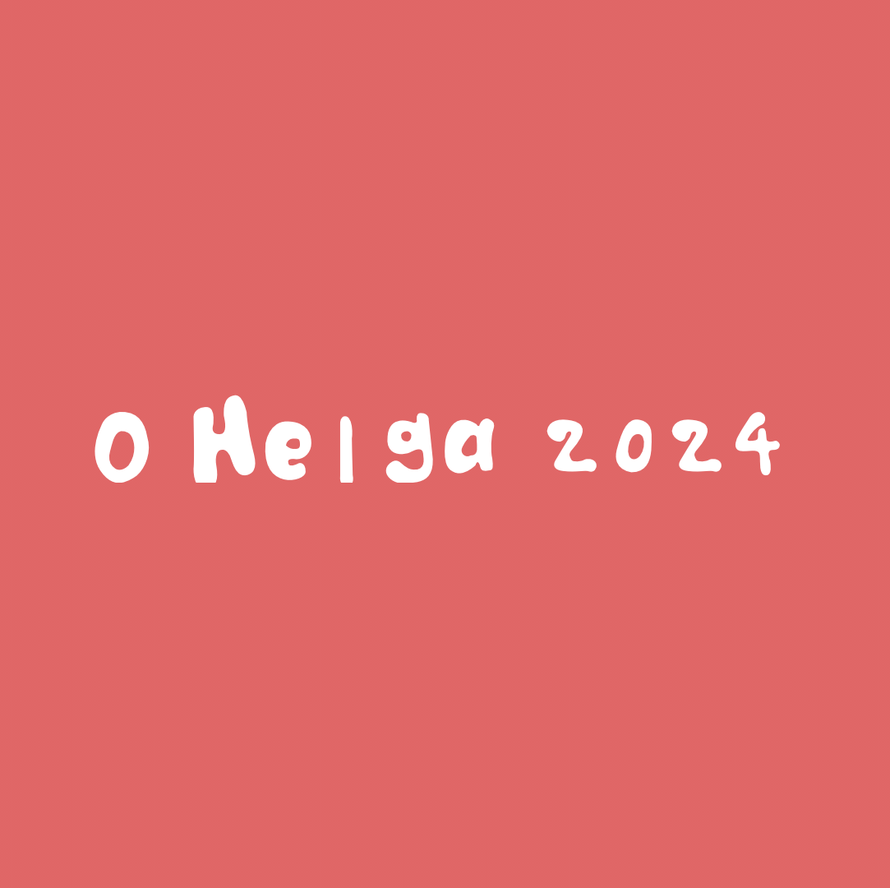

Ja tapahtui niinä päivinä, että kulttuurileikkausten tuulet puhalsivat myös meidän pienen mutta sydämellisen tuotantomme ylle. Ei löytynyt sijaa vanhoille tavoille, ja niinpä O Helga -podcast syntyi uudelleen, uudenlaisena joulun ihmeenä, Instagramin digitaaliseen seimeen.
Ja tapahtui niinä päivinä, että kulttuurileikkausten tuulet puhalsivat myös meidän pienen mutta sydämellisen tuotantomme ylle. Och se fanns ingen plats för det gamla, och så föddes O Helga på nytt, som ett julens under i en digital krubba på Instagram.
I år bär vi fram två tolkningar av det stora och eviga: O Helga Natt. Två versioner, två perspektiv, men endast en fråga: vilken berör julens innersta väsen? Te, ihanat seuraajamme, olette viisaat tietäjät, jotka saapuvat äänestämään ja kruunaamaan vuoden parhaan tulkinnan.
Tulkaa siis katsomaan ja kuuntelemaan näitä kuvaelmia @Ohelga.blog Instagramissa. Ty såsom änglarna visade sig för herdarna, så uppenbarar sig också julens magi där ni får låta era röster höras.
Äänestys alkaa pian – olkaa valmiit, sillä suuri hetki lähestyy!
Omröstningen börjar snart – var redo, ty den stora stunden närmar sig!
🎄✨ ✨🎄